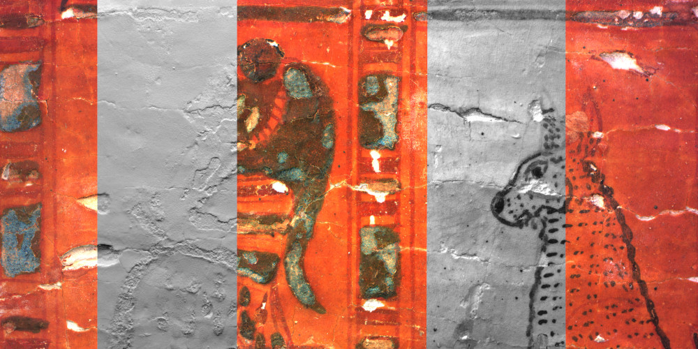

Heritage Visualisation
pixel+ Viewer
Examples
(Click on an image to open.)

Downloading file to browser memory
0%
Your browser does not support the HTML5 canvas element. If possible, please upgrade your browser.
Your browser does not support the HTML5 canvas element. If possible, please upgrade your browser.
Metadata
Filename:
Type:
Dimensions:
Publication:
Description:
Notes:
Display
Visual style
PLD
Default color
Sharpen
Shaded
Shaded exaggerated
Sketch 1
Sketch 2
xray
Curvature
Normals
HSH RTI
Default color
Specular Enhanchement
HSH Sharpening
PLD vs HSH relighting
PTM
Default color
Specular Enhancement
RBF RTI
Default color
Specular Enhanchement
Filter parameters
Intensity 1:
Intensity 2:
Param 0:
Param 1:
Param 2:
Param 3:
Reflectance source
Albedo
Ambient
Color source
IR
R
G
B
UV
IRG
IGB
RGB
RGU
GBU
Normal source
PLD
IR
R
G
B
UV
HSH RTI
HSH
PTM
PTM
RBF
RBF
Position
Reset
Display 1:1
Rotate 90 degrees
Printing
Name:
Take 1:1 printout
link
Technical data
Filesize:
HTTP 206 Partial Content:
Number of items:
Log:
 cuneifrom tablet with writen characterss and a seal impression (© Art and History Museum: O.181). The interactive relighting of the RGB rendering of the surface of a cuneiform tablet virtually simulates the interaction how light casts on the relief when a reader of the document identifies the scribal characters and the seal impression’s iconography. Secondly, by excluding the RGB texture map (‘shaded’ rendering) the relief during virtual relighting appears even more profound.")
. To the left the RGB rendering (based on the obtained albedo values) represents the drawing as it appaers to the human eye; to the right the shaded rendering reveals the smallest unevennesses on the topography of the surface.")
. The RGB rendering represents the drawing as it appears to the human eye (based on albedo values). With the shaded rendering the topography of the surface can be studied. In this case, it visualizes the tracing lines (very shallow indentations in the paper) made by a stylus used by the engraver to transfer Bruegel’s design from the paper version onto the copper plates to produce prints. No other visualization technique documents this feature with the same success rate.")
. Three manners in which the interactive data can be generated are fading into each other. These visualisations make it possible to study the surface and/or automatically simplify the relief. Left: Standard RGB rendering, as it appears to the human eye (based on the albedo values); Middle: Automated drawing or sketch1 rendering, the steep variations in the surface are accentuated in shades of grey; Right: Normal mapping, the color variations conceal information on the surface orientations.")
 (© Art and History Museum: IR.1034). The RGB, specular enhancement and the normal map rendering blend into eachother. It visualizes a number of different aspects of the stone surface.")
 (© KBR: MS15001)")